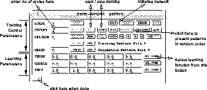

Many networks have to be initialised before they can be used. To do this click on (top line of buttons in control). You can change the range of random numbers used in the initialisation by entering appropriate values into the fields to the right of 'INIT' at the lower end of the control panel.
